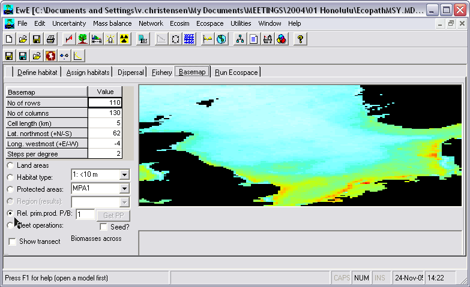

The basemap is used to mediate between an Ecopath file - which assumes an homogenous distribution of the biomasses in an undefined space – and a real ecosystem with geographic features (land vs. water, bathymetry, etc.) impacting on the distribution of the biomasses in that file.
The number of homogenous cells in the basemap may range from 9 (for a square 3x3 map, used e.g. for verification or demonstration purposes) to 10 000, (e.g., for a square 100 x 100 map).
We recommend, unless otherwise required the intermediate 20 x 20 map provided as default, which represents a compromise between showing details and maintaining a high computing speed. When a desired number of cells is entered, the number of cells used in the basemap is computed as the number of square cells that is closest to the number entered, while remaining compatible with the aspect ratio of the map.
One defined in terms of its dimension, the basemap is used to sketch and show, by cell:
Thus, a system including a number of narrow, crooked channels must be simplified, as movements on Ecospace map can only resemble those of rooks on chessboards, but not those of bishops.
Figure A [from Tom Okey] gives an example of a highly structured system Prince William Sound (PWS), Alaska, while Figure X [also from T. Okey] shows the corresponding Ecospace basemap. Note the straightened arms of PWS, allowing unimpeded movement across the faces of the cells.
Though not contributing to the results, the basemap cells defined as ‘land’ consume memory and computing time; thus, their number should be kept as small as possible, e.g. by orienting the basemap sideways where appropriate.
The basemap may include open borders, i.e., water areas not bounded by land. In such cases, the flow of organisms out of a border cell is compensated for by an equal flow of organisms into the cell, i.e., the system will not ‘leak’.

Figure 10.6. Ecospace basemap. Land areas, habitat types, MPA areas, relative primary production, and cost of fishing can be defined on the spatial grid. The ‘Set Advection field’ links to an advection model. This basemap is read via the Web from a linked server at UBC (available through ‘Define habitat’ map), and illustrates spatial primary productivity based on SeaWiFS data.
Protected areas are defined as set of cells in which no fleet is permitted to operate. (Thus, ‘cheating’, wherein one or several fleets illegally operate inside a protected area, can be accommodated by Ecospace).
Restricted or protected areas (R/PAs) may consist of one or several cells, adjacent or not, and may touch upon a coastline, or not.
Note that for a number of theoretical and practical reasons, marine protected areas (MPAs) and other forms of R/PAs are more effective when they have as few cells as possible that are adjacent to exploited cells. This can be achieved by making the R/PA as compact as possible (i.e., ‘round’ or square rather than elongated), and locating it adjacent to a coastline.
Mapping such areas is done by sketching a multiplier of the baseline P/B for primary producers. This multiplier, which may range from 0.01 to 100, can thus be used to depict anything from areas with very low primary production rates to areas with very high rates compared to the underlying Ecopath model. The values entered are relative and the total primary production is scaled so that it will be the same as in the base Ecopath model.
Warning: Ecospace is sensitive to this setting. Even if the range is 0.01 to 100 such extremes should be used with great care only.
[A routine is planned to automatically calculate nearest sailing distances from a port/landing place (while considering obstacles, e.g., islands)]
As might be seen (once a simulation has been performed), the biomass drop when the transect line crosses cells defined as land. The transect line allows identification of trophic cascades (abundant predators, scarce prey, and vice versa) in an ecosystem context, notably when drawn across Restricted/Protected Areas, where top predator biomasses tend to be high.
Completing the basemap is achieved by clicking any of the buttons defined by the above bullets, then using the mouse to sketch the corresponding map information.
Details on ‘Habitat’ and the Fishery can be obtained by clicking the corresponding tabs.